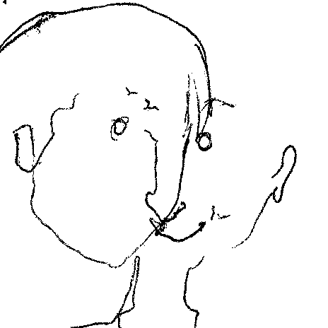

Hi!
My name's Matthew Nerger. I'm a writer and front-end web developer currently based in New York City. I've been coding for the web since early 2015, and I've built and maintained websites for a number of clients, many of which you can read about above.
Visit my GitHub page to see more of my work, or check out my resume to read up on education and work history.
In addition, I write and produce music, and write interesting fiction on the side.
Drop me an email if you'd like me to build you something. I'm always eager to create more.
